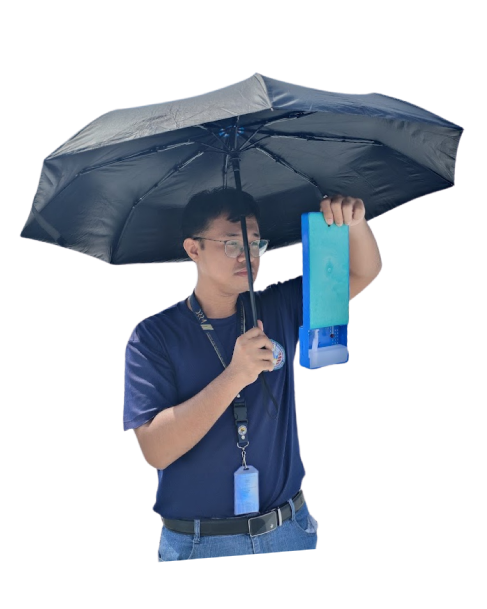
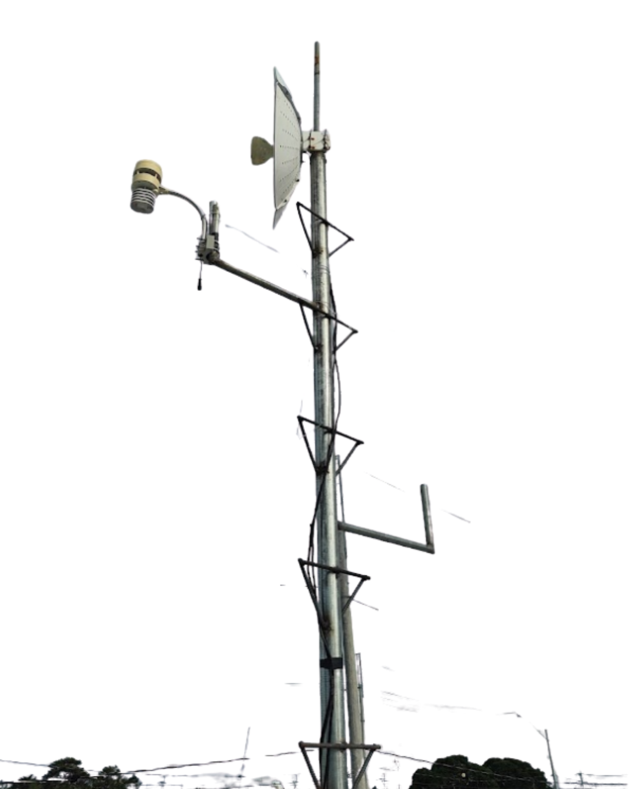

I have a deep passion for meteorology and astronomy, and I firmly believe that science should serve the community. In 2024, I relocated to Naic with a clear mission: to help strengthen local disaster preparedness through science-based monitoring and public awareness.
As a Citizen Scientist and Local Disaster Manager, my goal is to help protect our community from natural hazards such as extreme heat, heavy rainfall, strong winds, storm surges, earthquakes, and volcanic activity that may affect our beloved town of Naic, Cavite.

This advocacy led me to establish the Naic Meteorological Observatory — a personally funded initiative dedicated to local weather and environmental monitoring. Through my own savings, I invested in essential instruments that allow me to provide real-time, science-based environmental data supporting public safety, risk reduction, and informed decision-making.
Naic Meteorological Observatory
Personally funded local weather and environmental monitoring station serving Naic, Cavite since 2024.

Through my own savings, I invested in essential instruments to monitor the environmental conditions that affect our community:
"As long as I am able, I remain committed to sharing technical and scientific assistance with our residents and supporting the Local Government of Naic in fulfilling our shared responsibility of safeguarding lives and communities."
For any donations, you can scan this QR code or send to the GCash number below:
Your donations are important for me para ipag patuloy ang aking adhikaing makatulong sa ating kababayan. Salamat po! 🙏